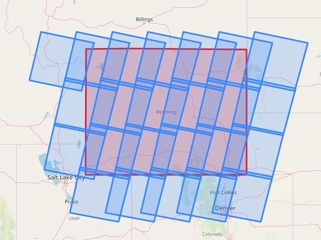

K Perham
Here's some stuff I've worked on in the past.
Post-fire imagery selection and download script
A simple way to download imagery based on the date of last fire that occured in a LandSat scene.
Post-fire L8 imagery - Jupyter Notebook 
Examining the distribution of bedrock types using USGS data

UC Boulder - open coursework for the graduate certificate in Earth Data Science https://www.earthdatascience.org/
Here's a few of the projects I first learned to code in R
Cloud Mask 
University of Helsinki